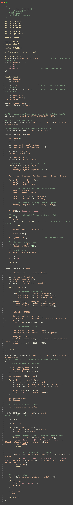

<!doctype html>
<html>
    <head>
        <meta charset="UTF-8">
        <meta name = "viewport" content = "width = device-width, initial-scale=1.0">
        <title>코드 리뷰</title>
        <link rel="stylesheet" type="text/css" href="../../css/pages.css">
    </head>
</html>

<body>
    <header>
        <h3><a href = "../../index.html">HAGUS <br> HARDWARE</a></h3> 
        <ul id="main_menu">
        </ul>

        <script src = "../../MainMenu.js"></script>
    </header>

    <section class="section">
    <div id = "tag_menu">
    </div>

    <script src = "../../TIL_tag_menu.js"></script>

    <div id = "tag_list">
        <div class="l_title"><a href = "../../TIL.html">Study. </a></div><hr>
        <div class = "l_subtitle"><div class = "title"><a href = "../../TIL.html"><strong>Code Review_Phil_Sem </div><div id="date">2021.6.11</div></strong></a></div>
             <!--content-->
        <div class = "content">
<br>
<pre>
!! 기말 고사 끝나면 지울 것 !!

<strong>!! POSIX Mutex functions !!</strong>
<i>헤더 : pthread.h</i>

<strong>int pthread_mutex_init(pthread_mutex_t *mutex, const pthread_mutex_attr *attr)</strong>
<i style="font-size: x-small;"> 파라미터 : 초기화 할 mutex 객체, mutex 특징 정의(기본값 NULL)</i>

<strong>int pthread_mutex_lock(pthread_mutex_t *mutex)</strong>
<i style="font-size: x-small;"> 파라미터 : 잠궈야 할 mutex</i>

<strong>int pthread_mutex_trylock(pthread_mutex_t *mutex)</strong>
<i style="font-size: x-small;"> 파라미터 : mutex를 잠금</i>

<strong>int pthread_mutex_unlock(pthread_mutex_t *mutex)</strong>
<i style="font-size: x-small;"> 파라미터 : 잠금을 해제 할 mutex</i>

<strong>int pthread_mutex_destroy(pthread_mutex_t *mutex)</strong>
<i style="font-size: x-small;"> 파라미터 : 파기해야 할 mutex</i>

</pre>


    


        <br>
        <br>
        

        </div>

    </div>

</section>

    
</body>


